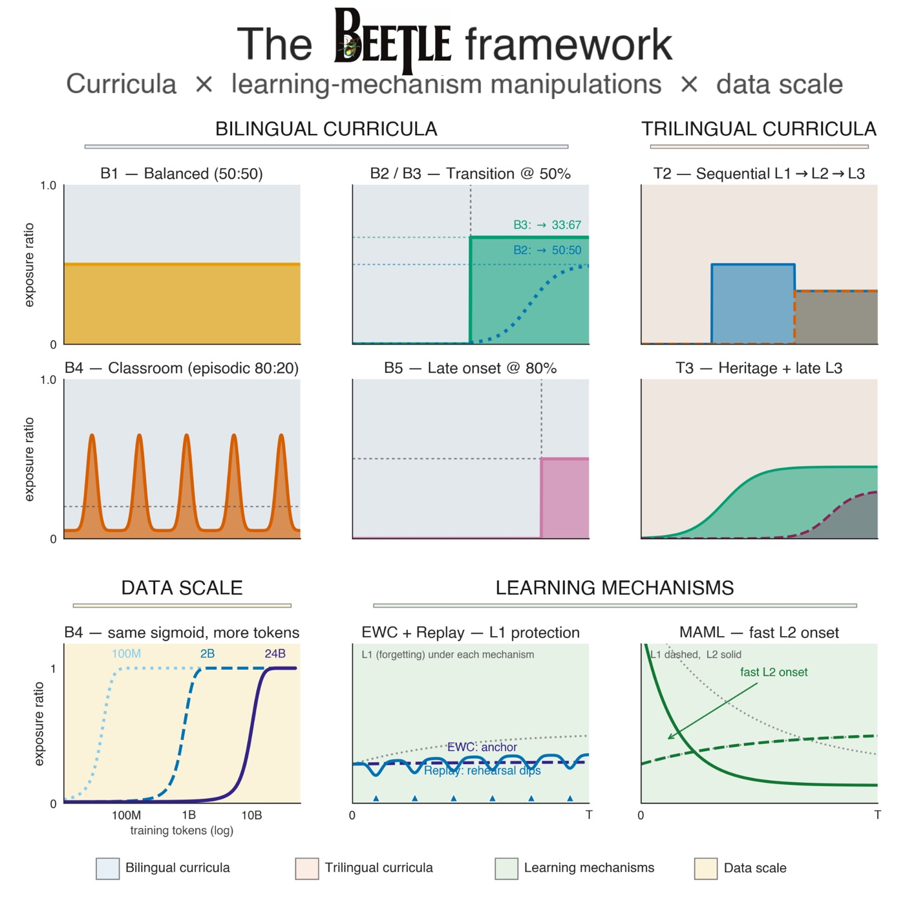
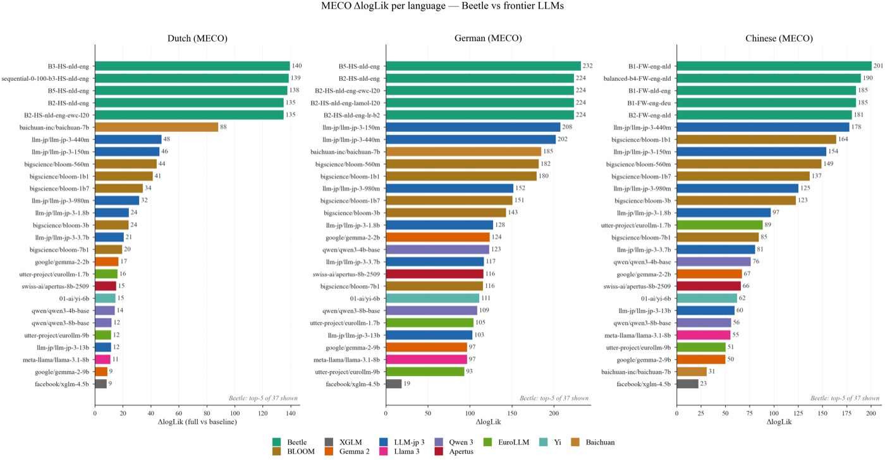
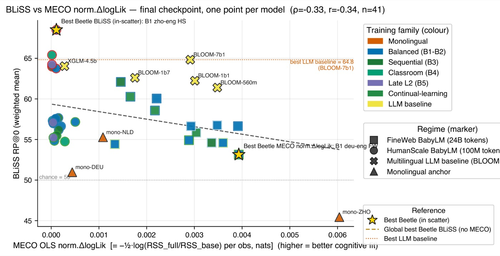
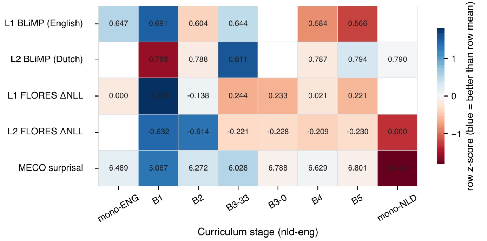
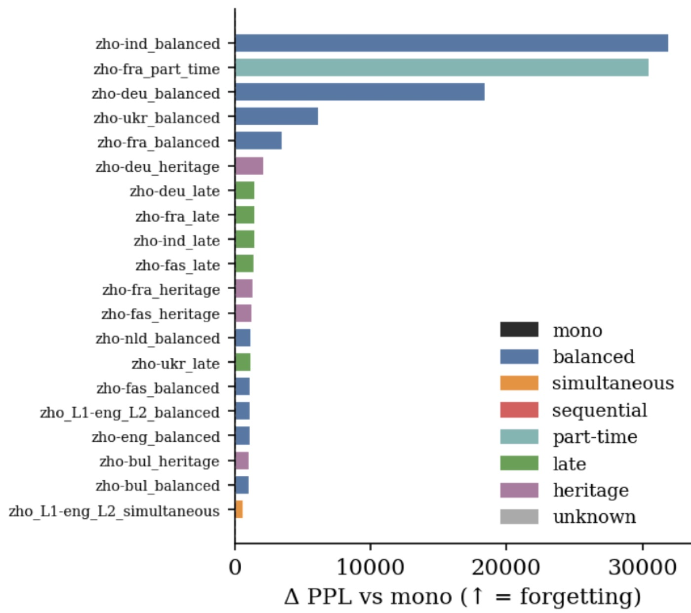
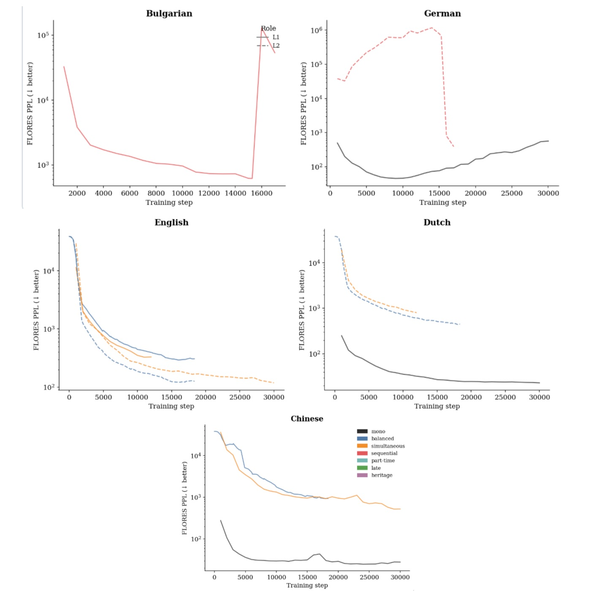
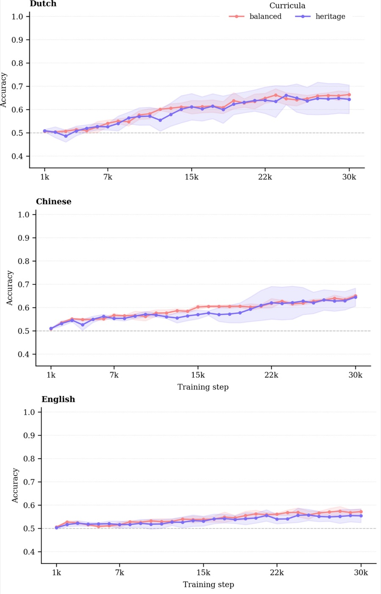

The question
Beetle makes language-model development experimentally observable and controllable.
Most of what we know about language models comes from testing finished ones. We evaluate a trained model, compare its scores with another model's, and attribute the gap to whatever separates them, which is usually size, data and architecture all at once. That tells us what a model can do. It says little about how the ability formed, or which part of the model's experience produced it.
Beetle makes the learning experience the experimental variable. Models in a comparison share an architecture, training code and budget, and differ in one controlled respect, such as the point at which a second language enters the data. Every model is checkpointed densely, so a difference at the end of training can be traced back through the run to where it first appeared.
- Evaluating a finished model
- Studying how it developed
Experimental controls
A Beetle experiment is specified by six settings, each of which can be changed while the others stay fixed. They are set in a declarative YAML configuration rather than in bespoke training scripts, which is what makes large, systematic ablations practical.
- 0113 first languages; bilingual and monolingual runs
Language exposure
Which languages a model encounters, and which it learns first.
- 02five curricula, B1–B5, drawn below
Exposure curriculum
When the second language arrives, and in what proportion.
- 03set independently; tokenisers released
Tokenisation
How text is divided into the units the model learns from.
- 04100M, 2B or 24B tokens
Training budget
How much data the model sees.
- 05decontaminated, pretokenised data at each scale
Corpus composition
What the training text consists of.
- 06log2 checkpoints with gradients and activations
Developmental trajectory
Where along training the model can be measured.
Five exposure curricula
The curriculum is the variable most specific to Beetle. Holding the languages, model and budget fixed, it changes only when the second language appears and how much of the data it makes up.
- B1balanced, 50:50 throughout
- B2gradual transition after 50% of training, to 50:50
- B3step transition at 50%, to 33:67
- B4classroom: episodic bursts, 80:20 overall
- B5late onset at 80% of training

The release
330 models285 bilingual45 monolingual13 first languagescurricula B1–B5100M / 2B / 24B tokensPicoDecoder backbone
The first release contains 330 models: 285 bilingual and 45 monolingual. Their 13 first languages were chosen to vary in typological distance from English and include German, Dutch, Chinese, Italian, Hindi, Russian, Turkish and Basque. The models span five exposure curricula and three training scales of 100M, 2B and 24B tokens.
The default backbone is a 125M-parameter, LLaMA-style PicoDecoder from PicoLM; encoder–decoder, mixture-of-experts and state-space variants are also supported. Checkpoints follow a log2 schedule and keep gradients and activations, so the suite can be used for interpretability work without retraining anything. For several of these languages, these are the first densely checkpointed models to be released.
Everything needed to reproduce the work is public: the checkpoints, the tokenisers, the decontaminated and pretokenised training data at all three scales, and the analysis pipelines. The software itself is three pip-installable libraries, covering controlled pretraining, exposure curricula, and analysis and interpretability.
What it can study
Because the models form matched populations, a question about learning history becomes a comparison between runs. Some of the questions the suite is built for:
- When does a second language start to be represented, and does it arrive gradually or in jumps?dense checkpoints · curriculum
- Does the order in which languages are learned change how much of the first language a model keeps?curriculum · language exposure
- Does a curriculum work the same way for a first language close to English as for a distant one?language exposure · curriculum
- How do representations of different languages converge or diverge as training goes on?language exposure · developmental trajectory
- How much does segmentation shape cross-lingual representations, separately from the data?tokenisation
- Can small models trained on modest data account for how people read in a second language?training budget · curriculum
The models are evaluated on MECO L2 reading times, BLiSS, CEFR, JFLEG and Mono/Multi-BLiMP, so behavioural and representational measures can be compared on the same runs.
First results
The EMNLP 2026 paper uses Beetle to ask how exposure structure affects second-language learning in small models. Three results stand out.
Small models match much larger ones on human reading times
Models trained with staged exposure fit human second-language reading times (MECO L2) as well as multilingual LLMs of up to 8B parameters, and often better, at a small fraction of their size.

Processing and grammaticality favour different curricula
Which curriculum is best depends on what you measure. Staged exposure gives the closest fit to online reading behaviour, while balanced exposure gives stronger offline grammatical judgements. Psycholinguists draw the same distinction between processing and competence in human second-language learners.

Learning happens in stages
With dense checkpoints the run itself can be inspected. Acquisition proceeds through phase transitions rather than smoothly, curricula interact with how close a language is to English, and the amount of the first language a model loses depends on both the curriculum and the second language. None of this is visible from the final checkpoint alone.

More learning-dynamics figures



Paper and software
Beetle: A Bilingual Model Suite for Modelling Second-Language Processing
S Salhan, C Arnett, J Michaelov, P Buttery
EMNLP 2026 | paper | OpenReview version | code and models | all publications
The Beetle framework
Software, documentation, the 330 checkpoints, tokenisers, training data and analysis pipelines.
beetlelm.github.io
Beetle: a framework for controlled bilingual and multilingual pretraining
The launch essay: why controlled pretraining, how the curricula work, and what the first experiments found.
September 2026 | read the essay
I designed and built Beetle, trained the 330 models, and wrote the curriculum engine, analysis toolkit and libraries. It builds on the PicoDecoder backbone from PicoLM, which I did not create.
Language models are not simply trained. They develop under particular experiences. Beetle lets us control those experiences and study what they produce.